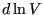
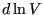

Next: Grand Canonical Up: Monte Carlo Simulations in Previous: Monte Carlo Simulations in
In this section, we consider how to conduct Monte Carlo simulation in
ensembles other than the canonical ensemble. In deriving the
partition function for the canonical ensemble
(Eq. 46), we imagined our sytem of constant  ,
,
 , and
, and  in thermal contact with a large reservoir. This thermal
contact allowed the system and reservoir to exchange energy such that
the system remained at constant
in thermal contact with a large reservoir. This thermal
contact allowed the system and reservoir to exchange energy such that
the system remained at constant  , and what resulted was the
Boltzmann factor. In Section 5.4.1, F&S explain the case when we
have the reservoir and the system both thermally and mechanically coupled. The mechanical coupling allows the volume of
the system to change such that the pressure in the system is the same
as the reservoir, which is again considered as an inifinite ideal gas.
In addition to thermostatting our system, the reservoir acts as a barostat.
, and what resulted was the
Boltzmann factor. In Section 5.4.1, F&S explain the case when we
have the reservoir and the system both thermally and mechanically coupled. The mechanical coupling allows the volume of
the system to change such that the pressure in the system is the same
as the reservoir, which is again considered as an inifinite ideal gas.
In addition to thermostatting our system, the reservoir acts as a barostat.
First, for convenience, we express the set of coordinates,  , scaled by the box length,
, scaled by the box length,  , as
, as  . The partition
function in the NPT ensemble is then
. The partition
function in the NPT ensemble is then
| (168) |
| (169) |
Now, compared to the canonical ensemble, in the NPT ensemble, volume
is an additional degree of freedom. We need the probability
distribution to include volume:
| (170) | |||
| (171) |
| acc | (172) |
We can also consider trial move that changes the logarithm of the box
size from  to
. In this
case, the integral of
to
. In this
case, the integral of  over is re-expressed as an integral
of over , and the acceptance rule is the same as the
one above except for a factor of multiplying
,
instead of
over is re-expressed as an integral
of over , and the acceptance rule is the same as the
one above except for a factor of multiplying
,
instead of  .
.
The C-code mclj_npt.c implements
an NPT MC simulation of the Lennard-Jones liquid using both particle
displacements and log- displacements. For each cycle, there is a
probability that a trial move is a volume displacement. The
trial move generates a random displacement, computes a new box length,
rescales all particle positions, scales the cutoff radius, and
recomputes the tail corrections and shift, if applicable. If the
Metropolis criterion is not met after a random number is selected,
then all of these operations are undone. Otherwise, the new box size
with the newly scaled particle positions is kept. The particle
displacement algorithm is the same as in
displacements. For each cycle, there is a
probability that a trial move is a volume displacement. The
trial move generates a random displacement, computes a new box length,
rescales all particle positions, scales the cutoff radius, and
recomputes the tail corrections and shift, if applicable. If the
Metropolis criterion is not met after a random number is selected,
then all of these operations are undone. Otherwise, the new box size
with the newly scaled particle positions is kept. The particle
displacement algorithm is the same as in mclj.c.
As an exercise, you can use the code to regenerate Figure 5.3 in the
text, which is again a slice through the phase diagram of the
Lennard-Jones fluid at  = 2.0. This temperature is above the
critical tempeerature, so we do not anticipate a phase transition at
the pressures investigated. However, we saw that when we considered
= 2.0. This temperature is above the
critical tempeerature, so we do not anticipate a phase transition at
the pressures investigated. However, we saw that when we considered
 = 0.9 using the NVT MC simulation, negative pressures were
predicted, indicating that the system would have liked to phase
separate but couldn't due to its fixed density and finite size. That
is, at the density specified, there might not be enough particles to
“nucleate” the denser of the two phases. NPT simulations in
principle offer a way around that by allowing the system density to
fluctuate.
= 0.9 using the NVT MC simulation, negative pressures were
predicted, indicating that the system would have liked to phase
separate but couldn't due to its fixed density and finite size. That
is, at the density specified, there might not be enough particles to
“nucleate” the denser of the two phases. NPT simulations in
principle offer a way around that by allowing the system density to
fluctuate.
I ran the code with  = 108 particles for 10
= 108 particles for 10 cycles (Note that I have changed my
definition of “cycle”. Before, one “cycle” was
cycles (Note that I have changed my
definition of “cycle”. Before, one “cycle” was  moves; now it
is a single move. This distinction isn't important for now, but I
thought you'd like to be made aware.) The log-volume maximum
displacement was set at 0.25, and the maximum particle displacement
varied from 0.3 for
moves; now it
is a single move. This distinction isn't important for now, but I
thought you'd like to be made aware.) The log-volume maximum
displacement was set at 0.25, and the maximum particle displacement
varied from 0.3 for  , to 0.5 at the lowest value of
, to 0.5 at the lowest value of  . You can
see from Fig. 20 that the data at
. You can
see from Fig. 20 that the data at  = 2.0 is equally well
reproduced here as it was using conventional NVT MC (Fig. 13). However, for
= 2.0 is equally well
reproduced here as it was using conventional NVT MC (Fig. 13). However, for  = 0.9, we notice that the densities which arise are clearly indicate a
high-density phase is prevalent. (Indeed, we saw in NVT simulations that forcing a
= 0.9, we notice that the densities which arise are clearly indicate a
high-density phase is prevalent. (Indeed, we saw in NVT simulations that forcing a  =0.9 system to exist at densities below about 0.75 resulted in negative pressures!) This code
also computes the pressure from the virial, and the measured pressure
and imposed pressures agreed, as you can see from the right-hand panel in Fig. 20.
=0.9 system to exist at densities below about 0.75 resulted in negative pressures!) This code
also computes the pressure from the virial, and the measured pressure
and imposed pressures agreed, as you can see from the right-hand panel in Fig. 20.
|
|
For temperatures near the critical temperature, we would expect the
fluctuations in density to be maximum. As an exercise, you can modify
mclj_npt.c to compute the average fluctuations in  .
.
cfa22@drexel.edu